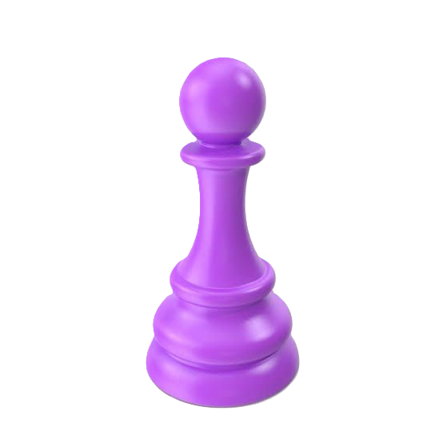
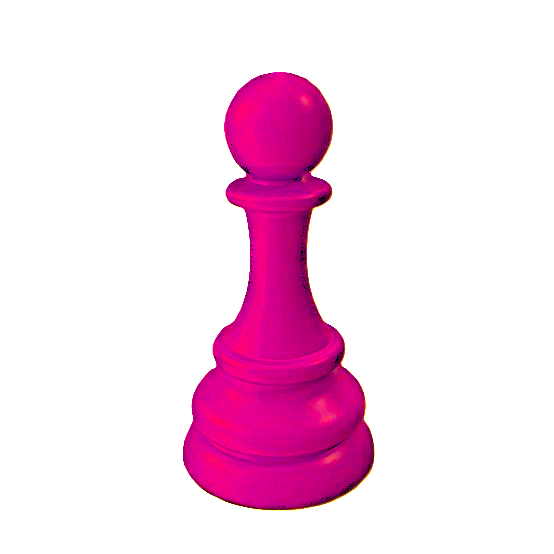
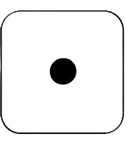

a:\satyamProject\satyamProject\snake&ladders\snake&ladders.html a:\satyamProject\satyamProject\snake&ladders\mainProjectPhotos<!DOCTYPE html>
<html lang="en">

<head>
    <meta charset="UTF-8">
    <meta name="viewport" content="width=device-width, initial-scale=1.0">
    <title>Snake & Ladders Game</title>
    <style>
        body {
            background-color: darkblue;
        }

        .mainHeading {
            /* position: absolute; */

            margin-left: 31%;
            text-align: center;
            color: blanchedalmond;
            border-radius: 8px;
            width: 41.67vw;
            box-shadow: 1px 1px 10px black;
        }

        .mainBoard img {
            z-index: -2;
            width: 43.05vw;
            margin-left: 30%;
            position: absolute;
            box-shadow: 1px 1px 10px black;
        }

        .key,
        .key2 {
            position: absolute;
            z-index: -1;
            width: 4.16vw;
            margin: 38% 25%;
        }

        .key2 {

            z-index: 1;
        }

        .dices {
            margin-top: 15%;
            margin-left: 24%;
            background-color: darkblue;
            border-style: none;
            position: absolute;

            img {

                /* z-index: -1; */
                width: 3.47vw;
                border-radius: 10px;
                box-shadow: 1px 1px 10px black;
            }

        }

        .dices img:hover,
        .Dices img:hover {
            width: 3.82vw;
        }

        .Dices {
            margin-top: 25%;
            margin-left: 24%;
            background-color: darkblue;
            border-style: none;
            position: absolute;

            img {
                border-radius: 10px;
                box-shadow: 1px 1px 10px black;
                width: 3.47vw;
            }
        }

        #turn1 {
            width: 10vw;
            position: absolute;
            margin-top: 16%;
            margin-left: 10%;
            font-size: 150%;
            color: antiquewhite;
        }

        #turn2 {
            width: 10vw;
            position: absolute;
            margin-top: 25.5%;
            margin-left: 10%;
            font-size:150%;
            color: antiquewhite;
        }
        #start{
            position: absolute;
            z-index: 3;
            width: 10vw;
            height: 10vh;
            border-style: none;
            font-size: 150%;
            border-radius: 6px;
            background-color: red;
            font-style: bold;
            box-shadow: 1px 1px 20px rgb(248, 2, 2);
            margin:20% 45%;
            
        }
        #start:hover{
            width: 11vw;
            height: 11vh;
            font-size: 200%;
            box-shadow: 1px 1px 20px blanchedalmond;
            background-color: greenyellow;
        }
        #end{
            margin: 40%  75%;
            width: 6vw;
            height: 6vh;
            border-style: none;
            font-size: 150%;
            border-radius: 6px;
            background-color: rgb(111, 255, 0);
            font-style: bold;
            box-shadow: 1px 1px 20px rgb(232, 248, 2);
        }
        #end:hover{
            width: 7vw;
            height: 7vh;
            font-size: 200%;
            box-shadow: 1px 1px 20px blanchedalmond;
            background-color: greenyellow;
        }
        #intro{
            font-size: large;
            color: blanchedalmond;
            font-family: 'Segoe UI', Tahoma, Geneva, Verdana, sans-serif;
        }
    </style>
</head>

<body>
    
    <div class="start">
        <button id="start" onclick="start()">
            START
        </button>
    </div>
    <div id="maincontent" class="maincontent">
        <marquee id="intro" behavior="" direction="" loop="1" scrollamount="18">hello there! this is Satyam Raj. And I have made this game for free. This is the game for 2 players only. so you can enjoy this game </marquee>
        <div class="mainHeading">
            <h1>Snake & Ladders Game</h1>
        </div>
        <div class="mainBoard">
            
        </div>
        
        
        <button class="dices" id="dices" onclick="roll()">
            
        </button>
        <button class="Dices" id="Dices" onclick="roll2()">
            
        </button>
        <div class="turns">
            <p id="turn1">Player 1 turn</p>
            <p id="turn2">Player 2 turn</p>
        </div>
        <div class="end">
            <button id="end" onclick="end()">END</button>
        </div>
    </div>
    <audio id="audio" src="mainProjectPhotos/intro-soeech.mp3" preload="auto"></audio>
    <audio id="dicesound" src="mainProjectPhotos/dicesound.mp3"  preload="auto"></audio>
    <audio id="snake" src="mainProjectPhotos/snake.mp3" preload="auto"></audio>
    <audio id="ladders" src="mainProjectPhotos/ladders.mp3" preload="auto"></audio>

    <script>
        // *****************************************function for changing dice ***********************************************
        function Switch(random, dice){
            let tempImage;
            switch (random) {
                case 1:
                    tempImage = dice.src = 'mainProjectPhotos/1.1.jpg';
                    dice.src = tempImage;
                    break;
                case 2:
                    tempImage = dice.src = 'mainProjectPhotos/1.2.jpg';
                    dice.src = tempImage;
                    break;
                case 3:
                    tempImage = dice.src = 'mainProjectPhotos/1.3.jpg';
                    dice.src = tempImage;
                    break;
                case 4:
                    tempImage = dice.src = 'mainProjectPhotos/1.4.jpg';
                    dice.src = tempImage;
                    break;
                case 5:
                    tempImage = dice.src = 'mainProjectPhotos/1.5.jpg';
                    dice.src = tempImage;
                    break;
                case 6:
                    tempImage = dice.src = 'mainProjectPhotos/1.6.jpg';
                    dice.src = tempImage;
                    break;
            }
        }
        
        // *****************************************function for starting the game ***********************************************

        let Start=document.getElementById('start')
        function start(){
            let intro=document.createElement('p')
            let Audio=document.getElementById('audio')

        Audio.play()
            maincontent.style.opacity="100%"
            Start.style.opacity="0%"
            Start.style.zIndex="-8"
        }

        // ******************************************function for ending the game ***********************************************
        function end(){
            // maincontent.style.opacity="0%"
            // Start.style.opacity="100%"
            // Start.style.zIndex="8"
            location.reload()
        }


        // *****************************************main******************************************************* 
        let maincontent=document.getElementById('maincontent')
        maincontent.style.opacity="00%"
        let board = document.getElementById('board')
        let step = 0;
        let step2 = 0;
        let key = document.getElementById('key')
        let key2 = document.getElementById('key2')

        let dice = document.getElementById('dice')
        let dice2 = document.getElementById('Dice')
        let snake=document.getElementById("snake")
        let ladders=document.getElementById('ladders')

        let diceSound=document.getElementById("dicesound")
        // function for 1st player******************************************************************
        function roll() {
            diceSound.play()
            dice2.style.filter = "contrast(100%)"
            dice.style.filter = "contrast(20%)"
            let random = parseInt(Math.random() * 6) + 1
            // console.log(random)
            Switch(random, dice)
            // ********************************************updating position**********************************************
            if (step < 101 && step <= 106) {
                step += random;
                if (step < 11) {
                    key.style.margin = `38% ${32 + 4 * (step - 1)}%`
                    if (step == 1) {
                        ladders.play()
                        key.style.margin = `26% 40%`
                        step = 38
                    }
                    else if (step == 4) {
                        ladders.play()
                        key.style.margin = `34% 56%`
                        step = 14
                    }
                    else if (step == 8) {
                        ladders.play()
                        key.style.margin = `30% 68%`
                        step = 30
                    }
                }

                else if (step > 10 && step < 21) {
                    key.style.margin = `34% ${68 - 4 * (step - 11)}%`
                }
                else if (step > 20 && step < 31) {
                    key.style.margin = `30% ${32 + 4 * (step - 21)}%`
                    if (step == 21) {
                        ladders.play()
                        key.style.margin = `22% 36%`
                        step = 42
                    }
                    else if (step == 28) {
                        ladders.play()
                        key.style.margin = `10% 48%`
                        step = 76
                    }
                }
                else if (step > 30 && step < 41) {
                    key.style.margin = `26% ${68 - 4 * (step - 31)}%`
                    if (step == 32) {
                        snake.play()
                        key.style.margin = `38% 68%`
                        step = 10
                    }
                    else if (step == 36) {
                        snake.play()
                        key.style.margin = `38% 52%`
                        step = 6
                    }
                }
                else if (step > 40 && step < 51) {
                    key.style.margin = `22% ${32 + 4 * (step - 41)}%`
                    if (step == 48) {
                        snake.play()
                        key.style.margin = `30% 52%`
                        step = 26
                    }
                    else if (step == 50) {
                        ladders.play()
                        key.style.margin = `14% 56%`
                        step = 67
                    }
                }
                else if (step > 50 && step < 61) {
                    key.style.margin = `18% ${68 - 4 * (step - 51)}%`
                }
                else if (step > 60 && step < 71) {
                    key.style.margin = `14% ${32 + 4 * (step - 61)}%`
                    if (step == 62) {
                        snake.play()
                        key.style.margin = `34% 40%`
                        step = 18
                    }
                }
                else if (step > 70 && step < 81) {
                    key.style.margin = `10% ${68 - 4 * (step - 71)}%`
                    if (step == 71) {
                        ladders.play()
                        key.style.margin = `2% 64%`;
                        step = 92
                    }
                    else if (step == 80) {
                        ladders.play()
                        
                        key.style.margin = `2% 36%`;
                        step = 99
                    }
                }
                else if (step > 80 && step < 91) {
                    key.style.margin = `6% ${32 + 4 * (step - 81)}%`
                    if (step == 88) {
                        snake.play()
                        key.style.margin = `30% 44%`
                        step = 24
                    }
                }
                else if (step > 90 && step <= 94) {
                    key.style.margin = `2% ${68 - 4 * (step - 91)}%`
                }
                else if (step == 95) {
                    snake.play()
                    key.style.margin = `18% 48%`
                    step = 56
                }
                else if (step == 96) {
                    key.style.margin = `2% 48%`
                }
                else if (step == 97) {
                    snake.play()
                    key.style.margin = `10% 40%`
                    step = 78
                }
                else if (step == 98) {
                    key.style.margin = `2% 40%`
                } else if (step == 99) {
                    key.style.margin = `2% 36%`
                } else if (step == 100) {
                    key.style.margin = `2% 32%`
                    alert("You won! Player 1 wins. GAME OVER")
                    location.reload()
                }
                else if (step == 101 || step == 102 || step == 103 || step == 104 || step == 105) {
                    step -= random
                }
            }
        }
        
        // function for 2nd player******************************************************************
        function roll2() {

            diceSound.play()
            dice2.style.filter = "contrast(20%)"
            dice.style.filter = "contrast(100%)"
            let random = parseInt(Math.random() * 6) + 1
            // console.log(random)
            Switch(random, dice2)

             // ********************************************updating position**********************************************
            if (step2 < 101 && step2 <= 106) {
                step2 += random;
                if (step2 < 11) {
                    key2.style.margin = `38% ${32 + 4 * (step2 - 1)}%`
                    if (step2 == 1) {
                        ladders.play()
                        key2.style.margin = `26% 40%`
                        step2 = 38
                    }
                    else if (step2 == 4) {
                        ladders.play()
                        key2.style.margin = `34% 56%`
                        step2 = 14
                    }
                    else if (step2 == 8) {
                        ladders.play()
                        key2.style.margin = `30% 68%`
                        step2 = 30
                    }
                }

                else if (step2 > 10 && step2 < 21) {
                    key2.style.margin = `34% ${68 - 4 * (step2 - 11)}%`
                }
                else if (step2 > 20 && step2 < 31) {
                    key2.style.margin = `30% ${32 + 4 * (step2 - 21)}%`
                    if (step2 == 21) {
                        ladders.play()
                        key2.style.margin = `22% 36%`
                        step2 = 42
                    }
                    else if (step2 == 28) {
                        ladders.play()
                        key2.style.margin = `10% 48%`
                        step2 = 76
                    }
                }
                else if (step2 > 30 && step2 < 41) {
                    key2.style.margin = `26% ${68 - 4 * (step2 - 31)}%`
                    if (step2 == 32) {
                        snake.play()
                        key2.style.margin = `38% 68%`
                        step2 = 10
                    }
                    else if (step2 == 36) {
                        snake.play()
                        key2.style.margin = `38% 52%`
                        step2 = 6
                    }
                }
                else if (step2 > 40 && step2 < 51) {
                    key2.style.margin = `22% ${32 + 4 * (step2 - 41)}%`//******************************
                    if (step2 == 48) {
                        snake.play()
                        key2.style.margin = `30% 52%`
                        step2 = 26
                    }
                    else if (step2 == 50) {
                        ladders.play()
                        key2.style.margin = `14% 56%`
                        step2 = 67
                    }
                }
                else if (step2 > 50 && step2 < 61) {
                    key2.style.margin = `18% ${68 - 4 * (step2 - 51)}%`
                }
                else if (step2 > 60 && step2 < 71) {
                    key2.style.margin = `14% ${32 + 4 * (step2 - 61)}%`
                    if (step2 == 62) {
                        snake.play()
                        key2.style.margin = `34% 40%`
                        step2 = 18
                    }
                }
                else if (step2 > 70 && step2 < 81) {
                    key2.style.margin = `10% ${68 - 4 * (step2 - 71)}%`
                    if (step2 == 71) {
                        ladders.play()
                        key2.style.margin = `2% 64%`;
                        step2 = 92
                    }
                    else if (step2 == 80) {
                        ladders.play()
                        key2.style.margin = `2% 36%`;
                        step2 = 99
                    }
                }
                else if (step2 > 80 && step2 < 91) {
                    key2.style.margin = `6% ${32 + 4 * (step2 - 81)}%`
                    if (step2 == 88) {
                        snake.play()
                        key2.style.margin = `30% 44%`
                        step2 = 24
                    }
                }
                else if (step2 > 90 && step2 <= 94) {
                    key2.style.margin = `2% ${68 - 4 * (step2 - 91)}%`
                }
                else if (step2 == 95) {
                    snake.play()
                    key2.style.margin = `18% 48%`
                    step2 = 56
                }
                else if (step2 == 96) {
                    key2.style.margin = `2% 48%`
                }
                else if (step2 == 97) {
                    snake.play()
                    key2.style.margin = `10% 40%`
                    step2 = 78
                }
                else if (step2 == 98) {
                    key2.style.margin = `2% 40%`
                } 
                else if (step2 == 99) {
                    key2.style.margin = `2% 36%`
                } 
                else if (step2 == 100) {
                    key2.style.margin = `2% 32%`
                    alert("You won! Player 2 wins. GAME OVER")
                    location.reload()
                }
                else if (step2 == 101 || step2 == 102 || step2 == 103 || step2 == 104 || step2 == 105) {
                    step2 -= random
                }
            }
        }
    </script>
</body>

</html>